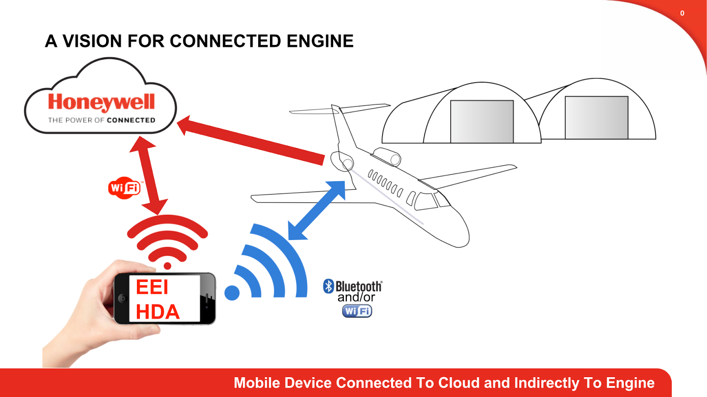

BlueSky Group Project Description
On every engine that Honeywell manufactures, there is an Engine Control Unit (ECU). The ECU saves trend and maintenance data in non-volatile memory (NVM) during normal operation. This data is then downloaded by maintenance personnel, either on a routine or as needed basis. The current method for doing the engine download is to connect a laptop to the aircraft engine maintenance port (usually in the cabin) using a 4 port RS-422 USB device and a cable. The user then uses the Electronic Engine Interface (EEI) software to do the download and review the data.
Our goal is to remove the need for a physical connection between the plane and the device that will be collecting the ECU data. We intend to do this through the use of a Bluetooth connection between an on board computer that will interface with the ECU, and a mobile device that a technician will use when they collect the data. The goal of this is to allow technicians to collect the data from the ECU more often, and with much less hassle than before. This will then allow Honeywell to collect all this data and improve service to their customers.
